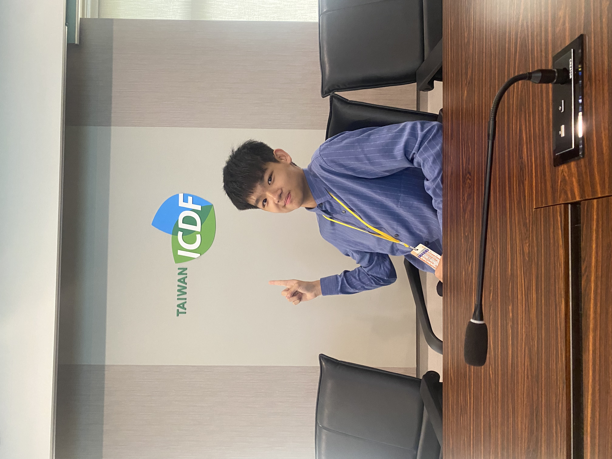
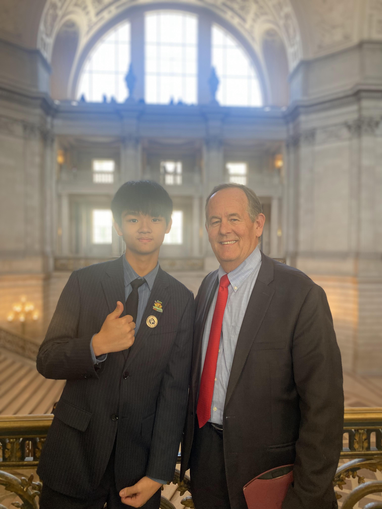

"The most powerful person in the world is the storyteller."
— STEVE JOBS
York 陳宥楷 York Chen
薇閣高中 | 雙語主持人 | 外交小尖兵 Wego High School | Bilingual Host | Diplomatic Envoy

探求未知的敘事者
Seeker of Unknown Stories
我目前就讀於薇閣高中。樂觀、開朗、始終保持正面思考，是我面對繁重學業與挑戰的核心。對我而言，生命不該被侷限在單一框架，而是一場不斷跨界、探索與精彩敘事的旅程。
在球場上我鍛鍊抗壓性，在舞台上我身兼主唱，用全心投入傳遞音樂的熱情。我始終相信，好的故事能跨越國界，觸動人心。
I am currently studying at Wego High School. Remaining optimistic, cheerful, and positive-thinking is my core strategy for balancing heavy academic workloads and challenges. To me, life should not be confined to a single frame; it is an ongoing journey of crossing boundaries, exploration, and compelling storytelling.
On the court, I hone my resilience; on stage, I perform as a lead vocalist, channeling my passion into music. I steadfastly believe that a good story can transcend borders and touch people's hearts.

鏡頭與國際敘事
Global Perspectives via Media
小學六年級時，我在《開拍吧孩子！》斬獲全國第一名，這顆創作的種子自此生根。國三時，受邀回歸主持第二季，我體會到跨部門溝通的關鍵價值。
我也創立 YouTube 頻道，分析阿富汗受教權、法國年金改革等嚴肅議題。透過報導與分析，我將英語能力轉化為社會影響力，並獲得《中學生報》專題競賽金獎。
In the 6th grade, I won 1st place nationwide in "Action! Kids," sowing the seeds of media creation. In my final year of junior high, I was invited back to host the second season, which taught me the vital value of cross-departmental communication.
I also founded a YouTube channel analyzing serious global issues like educational rights in Afghanistan and pension reforms in France. Through journalism and analysis, I turn English proficiency into social impact, earning a Gold Award in the Student Merit Newspaper competition.

思辨之巔：模聯歷程
The Peak of Debate & MUN
我致力於推廣模擬聯合國，不僅規劃了常態性的社團課程，更為非社團成員創辦了校內課後培訓班，帶領團隊在各大模聯會議中斬獲多項獎項。至今我已擔任過約 300 人規模會議的主席（持續累積中），指導並啟發了超過 100 位學生，其中更有 10 位以上學員在接受培訓後順利奪下會議獎項。此外，我亦曾擔任耶魯模擬聯合國台灣會議（Yale MUN Taiwan）的助理主席。
I dedicate myself to promoting Model United Nations, designing routine club courses and establishing after-school training classes for non-club members, leading teams to win multiple awards. I have chaired conferences of around 300 delegates, mentoring over 100 students, with more than 10 securing awards. Additionally, I served as an Assistant Director for Yale MUN Taiwan.

具體實踐：Wego ICDF
Real-world Diplomacy: Wego ICDF
我創立了 Wego ICDF 社團，擔任執行長。為了募款，我們走上街頭義賣自己設計的服飾。面對無數次的拒絕，我們學會了修正論述，最終成功募集資金。
今年四月，我們將親赴帛琉，將這份愛心微波爐致贈給當地的國小，用實際行動在國際上點亮台灣。這份堅持與勇氣，是我對外交最誠摯的熱愛。
I founded the Wego ICDF club and served as the CEO. To raise funds, we went onto the streets to sell apparel we designed ourselves. Encountering countless rejections taught us to refine our pitches, ultimately leading to a successful fundraising campaign. This April, we will travel to Palau to donate essential resources to local primary schools, highlighting Taiwan's warmth through grassroots action.

重大轉折：走向美國參訪
Turning Point: Diplomatic Visit to the U.S.
成功錄取「外交小尖兵」並赴美參訪，是我求學歷程的決定性轉折。走進外交最前線，我目睹了使節們如何在多變的全球局勢下維繫台灣的連結。
這份震撼讓我立下決心，未來將全力往外交與國際關係領域鑽研。同時，我也創立了 Podcast 節目，希望能建立跨世代的對話橋樑，傳遞青年的優秀想法。
Being selected as a National Diplomatic Envoy for an official visit to the United States marked a defining milestone. Stepping onto the front lines of global affairs, I witnessed how diplomats sustain Taiwan's presence amidst shifting geopolitical tides. This profound exposure solidified my ambition to fully dedicate my future studies to diplomacy and international relations.
.JPG)
未來展望：融合多維能力的國際說書人
Future Vision: The Multi-Dimensional Storyteller
展望未來，我對自己的期許是將「全英語思辨與談判能力」、「宏觀的國際關係視野」以及「影音媒體與聲音的傳播影響力」這三者進行有機的跨界結合。
不論未來的學術探索多麼艱辛，我都將以理性的思辨與感性的敘事，致力於在國際舞台上，講述屬於我們這一代青年、屬於台灣的動人故事。
Looking ahead, I aspire to seamlessly integrate all-English debating and negotiation proficiencies, a macro perspective on international relations, and the modern communicative influence of media. I will bring together rational debate and emotional storytelling to share the inspiring accounts of our generation.